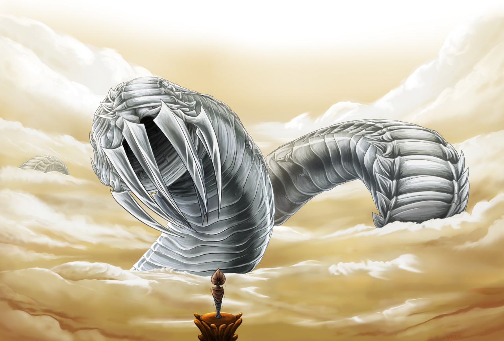
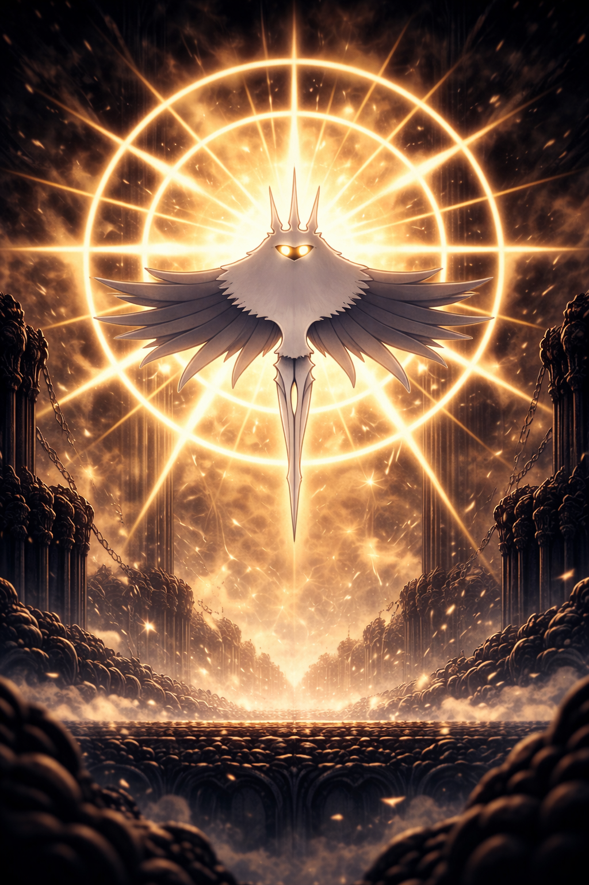
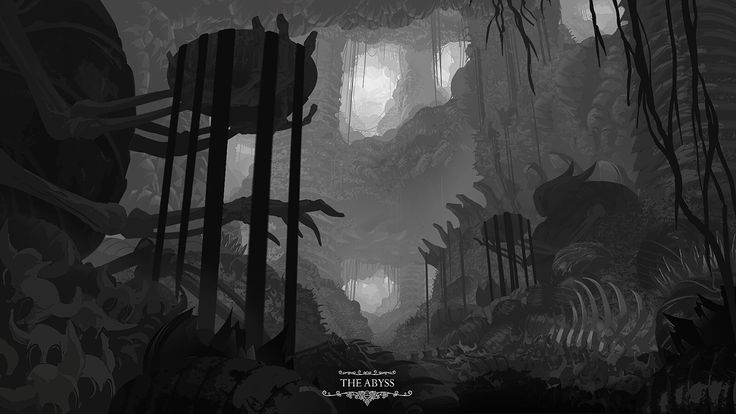
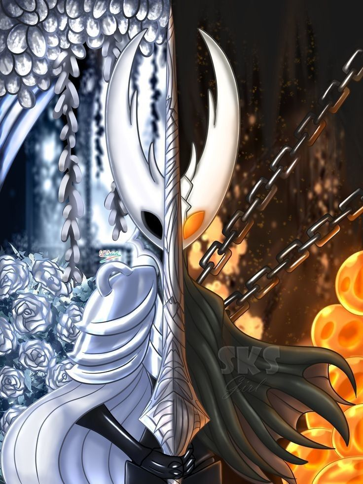
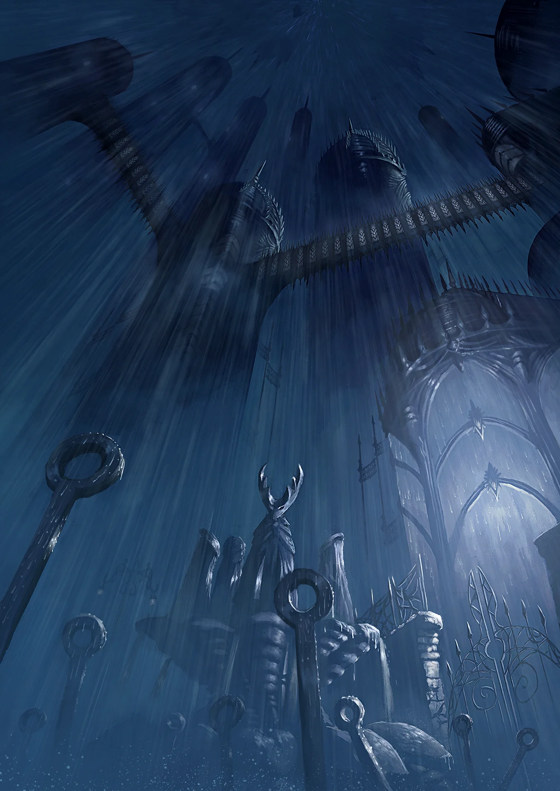
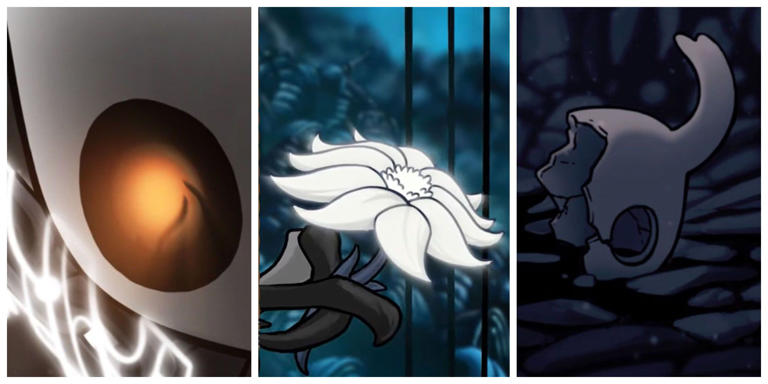

Before Hallownest ever existed, the world of Hollow Knight
was shaped by countless divine beings. Bugs worshipped gods
of vegetation, dreams, and darkness. Long before the Pale
King, an Ancient Civilization flourished, worshipping the
mysterious substance known as the Void. Their relics— arcane
eggs, soul totems, and strange structures—hint at a culture
obsessed with soul and shadow.
Among the greatest beings were the Wyrms, colossal serpents
with prophetic instincts. These creatures possessed some
form of foresight, allowing them to perceive future events
to an uncertain degree. One such Wyrm traveled across
distant mountains and wastelands, eventually arriving at the
edge of what would become Hallownest. There it died — though
not entirely. Inside its maw sat a pale, broken egg, from
which a new form of Wyrm was reborn: a being of meager
shell, known as the Pale King.
The Complete Lore of Hollow Knight
Chapter 1 — The Gods, the Ancients, and the Age Before Hallownest

Chapter 2 — The Rise of the Pale King
When the Pale King emerged, he discovered lands already
filled with thriving tribes. The Mushrooms of the Fungal
Wastes communicated through a shared hive-mind, which they
considered a mark of strength. The Mantis Tribe upheld a
proud culture rooted in physical strength and fierce
territoriality, governed by four powerful Mantis Lords. The
spiders of Deepnest maintained a monarchy of their own and
rejected any outside rule entirely, remaining deeply
isolated from their neighbors.
Also present were the Mosskin of Greenpath, born from the dream of the Higher Being known as Unn, and the Moth Tribe, who were created by and devoted to a radiant Higher Being called the Radiance. When the Pale King arrived and offered higher thought and civilization to the region's inhabitants, the Moth Tribe abandoned the Radiance entirely to worship this new light — a decision that would carry grave consequences for all of Hallownest.
Through the promise of elevated intelligence and the offer of a unified civilization, the Pale King united many of these tribes into what would become Hallownest.
Also present were the Mosskin of Greenpath, born from the dream of the Higher Being known as Unn, and the Moth Tribe, who were created by and devoted to a radiant Higher Being called the Radiance. When the Pale King arrived and offered higher thought and civilization to the region's inhabitants, the Moth Tribe abandoned the Radiance entirely to worship this new light — a decision that would carry grave consequences for all of Hallownest.
Through the promise of elevated intelligence and the offer of a unified civilization, the Pale King united many of these tribes into what would become Hallownest.

Chapter 3 — The Eternal Kingdom of Hallownest
Under the Pale King, Hallownest became a thriving
civilization. One of the kingdom's most significant
qualities was its effect on the intelligence of its
inhabitants. Bugs living within Hallownest's boundaries were
elevated in mind, while those outside remained
instinct-driven and primitive — suggesting that the kingdom
itself functioned as a kind of holy ground that raised the
cognition of those who dwelled within it.
The Pale King constructed an extensive infrastructure across the kingdom. He established stagways to transport passengers and goods, and ordered the construction of tramways connecting distant regions. The Crystal Peak was mined for its valuable crystals, and a grand capital — later known as the City of Tears — was founded at Hallownest's heart. The kingdom was further protected by an elite military force known as the Five Great Knights: Ogrim, Hegemol, Ze'mer, Dryya, and Isma.
At the same time, the Pale King kept himself largely hidden from his subjects. Shrines and idols were erected in his honor throughout the kingdom, and his White Palace was constructed deep beneath the city, further separating him from the civilization he had built.
The Pale King constructed an extensive infrastructure across the kingdom. He established stagways to transport passengers and goods, and ordered the construction of tramways connecting distant regions. The Crystal Peak was mined for its valuable crystals, and a grand capital — later known as the City of Tears — was founded at Hallownest's heart. The kingdom was further protected by an elite military force known as the Five Great Knights: Ogrim, Hegemol, Ze'mer, Dryya, and Isma.
At the same time, the Pale King kept himself largely hidden from his subjects. Shrines and idols were erected in his honor throughout the kingdom, and his White Palace was constructed deep beneath the city, further separating him from the civilization he had built.

Chapter 4 — The Radiance Awakens
Having been abandoned by the Moth Tribe, the Radiance did
not simply vanish — she persisted as a fading memory, kept
barely alive by hushed whispers of faith. A lone shrine to
her remained at the summit of the Crystal Peak, maintained
to preserve her memory against the encroachment of the Pale
King's influence.
Eventually, the Radiance's presence began to seep into the dreams of Hallownest's citizens. This manifested as a spreading infection: those afflicted fell into deep sleep and awakened with broken minds, reverting to basic instincts and acting as mindless extensions of the Radiance's will. The infection caused bodies to bloat and develop orange cysts, and linked its victims into a singular hivemind under the Radiance's control.
Various factions attempted to resist. The City of Tears sealed its gates. The scholars of the Soul Sanctum attempted to harness the power of soul as a countermeasure, at great cost. The Mantis Tribe, through sheer strength of will, managed to stave off infection — though one of their lords defected, welcoming the infection for the power it provided. None of these efforts proved sufficient to halt the spread.
Eventually, the Radiance's presence began to seep into the dreams of Hallownest's citizens. This manifested as a spreading infection: those afflicted fell into deep sleep and awakened with broken minds, reverting to basic instincts and acting as mindless extensions of the Radiance's will. The infection caused bodies to bloat and develop orange cysts, and linked its victims into a singular hivemind under the Radiance's control.
Various factions attempted to resist. The City of Tears sealed its gates. The scholars of the Soul Sanctum attempted to harness the power of soul as a countermeasure, at great cost. The Mantis Tribe, through sheer strength of will, managed to stave off infection — though one of their lords defected, welcoming the infection for the power it provided. None of these efforts proved sufficient to halt the spread.

Chapter 5 — The Abyss and the Vessels
Faced with a threat no conventional force could overcome,
the Pale King turned to the Void — a dark and mysterious
substance that had been worshipped by the Ancient
Civilization long before Hallownest's founding. At the
bottom of the Ancient Basin lay the entrance to a pit known
as the Abyss, within which rested a sea of Void.
The Pale King devised a plan: if a being could be created from pure Void — one with no will or mind of its own — it might be capable of containing the Radiance's infection without being corrupted by it. To achieve this, the Pale King and the White Lady produced countless eggs and cast them into the Abyss, allowing the Void to seep into the offspring within. These beings, known as Vessels, were not considered truly alive — they were shells filled by the darkness of the Void.
Thousands of Vessels were created. Only one was ultimately chosen: the being that would come to be known as the Hollow Knight. Once selected, the Pale King sealed the entrance to the Abyss, leaving the remaining Vessels behind. The Hollow Knight was then raised, trained, and prepared to serve as the vessel for the Radiance's containment — an act the Pale King and White Lady undertook with full awareness of its moral weight, seeing no other means to save the kingdom.
The Pale King devised a plan: if a being could be created from pure Void — one with no will or mind of its own — it might be capable of containing the Radiance's infection without being corrupted by it. To achieve this, the Pale King and the White Lady produced countless eggs and cast them into the Abyss, allowing the Void to seep into the offspring within. These beings, known as Vessels, were not considered truly alive — they were shells filled by the darkness of the Void.
Thousands of Vessels were created. Only one was ultimately chosen: the being that would come to be known as the Hollow Knight. Once selected, the Pale King sealed the entrance to the Abyss, leaving the remaining Vessels behind. The Hollow Knight was then raised, trained, and prepared to serve as the vessel for the Radiance's containment — an act the Pale King and White Lady undertook with full awareness of its moral weight, seeing no other means to save the kingdom.

Chapter 6 — The Dreamers
Even with the Hollow Knight prepared, additional seals were
required to protect the vessel's physical form while the
Radiance remained trapped within. To this end, the Pale King
sought out three powerful individuals who would become known
as the Dreamers.
Lurien the Watcher resided in the Watcher's Spire in the City of Tears, where he observed the kingdom through his telescope. Monomon the Teacher lived in the Teacher's Archives above Fog Canyon and possessed intimate knowledge of the Pale King's plan, recording detailed accounts of it in her cathode ray terminals. Herrah the Beast, Queen of Deepnest, agreed to become a Dreamer in exchange for a child — resulting in the birth of Hornet, later known as the Gendered Child.
Each of the three Dreamers entered an eternal sleep, and through their combined power, a seal was placed over the Black Egg — the structure in the Forgotten Crossroads built to contain the Hollow Knight. So long as the Dreamers slept, the entrance to the Black Egg remained locked, and the Radiance remained imprisoned within.
Lurien the Watcher resided in the Watcher's Spire in the City of Tears, where he observed the kingdom through his telescope. Monomon the Teacher lived in the Teacher's Archives above Fog Canyon and possessed intimate knowledge of the Pale King's plan, recording detailed accounts of it in her cathode ray terminals. Herrah the Beast, Queen of Deepnest, agreed to become a Dreamer in exchange for a child — resulting in the birth of Hornet, later known as the Gendered Child.
Each of the three Dreamers entered an eternal sleep, and through their combined power, a seal was placed over the Black Egg — the structure in the Forgotten Crossroads built to contain the Hollow Knight. So long as the Dreamers slept, the entrance to the Black Egg remained locked, and the Radiance remained imprisoned within.

Chapter 7 — The Collapse of Hallownest
The Pale King's plan initially succeeded: the infection was
contained, and Hallownest entered a period of uneasy
stability. Memorials were erected to the Hollow Knight and
the Dreamers in the City of Tears and the Resting Grounds.
Citizens of Dirtmouth once traveled to the Temple of the
Black Egg to pray, reporting a sense of peace within its
walls.
However, the Hollow Knight was not truly hollow. Tarnished by an idea instilled during its upbringing — believed by many to be a parental bond formed with the Pale King — the vessel's containment gradually weakened. The Radiance's infection began to leak through once more. Cities fell into ruin, the stagways shut down, and the population of Hallownest declined catastrophically.
As a final measure, the Pale King retreated — concealing himself, his White Palace, and his Pale Court within the Dream World. He eventually perished upon his throne within the palace. With the King gone and the kingdom in collapse, Hallownest fell into the state of silent ruin in which the events of the game take place.
However, the Hollow Knight was not truly hollow. Tarnished by an idea instilled during its upbringing — believed by many to be a parental bond formed with the Pale King — the vessel's containment gradually weakened. The Radiance's infection began to leak through once more. Cities fell into ruin, the stagways shut down, and the population of Hallownest declined catastrophically.
As a final measure, the Pale King retreated — concealing himself, his White Palace, and his Pale Court within the Dream World. He eventually perished upon his throne within the palace. With the King gone and the kingdom in collapse, Hallownest fell into the state of silent ruin in which the events of the game take place.

Chapter 8 — The Knight's Return
One Vessel had escaped the Abyss before the entrance was
sealed: the Knight. Having ventured beyond the boundaries of
Hallownest into the wilds outside, the Knight was eventually
drawn back — called by the roar of the Hollow Knight, or
perhaps by the Radiance within it.
Upon returning through the old well in Dirtmouth, the Knight descended into the fallen kingdom. It was noticed by Hornet, who tested its strength in combat and, recognizing its potential, guided it toward the ruins of Hallownest. Hornet saw in the Knight a possible successor to the Hollow Knight — one capable of either prolonging the stasis over the kingdom or confronting the infection at its source.
With the Dream Nail — a blade capable of tearing the veil between the waking world and the dream realm — the Knight could seek out the Dreamers, break their seals, and gain access to the Black Egg where the Hollow Knight remained chained.
Upon returning through the old well in Dirtmouth, the Knight descended into the fallen kingdom. It was noticed by Hornet, who tested its strength in combat and, recognizing its potential, guided it toward the ruins of Hallownest. Hornet saw in the Knight a possible successor to the Hollow Knight — one capable of either prolonging the stasis over the kingdom or confronting the infection at its source.
With the Dream Nail — a blade capable of tearing the veil between the waking world and the dream realm — the Knight could seek out the Dreamers, break their seals, and gain access to the Black Egg where the Hollow Knight remained chained.
Chapter 9 — The Five Endings
Depending on the path taken by the Knight, five distinct
endings unfold — each offering a different resolution to
Hallownest's crisis.
In the Hollow Knight ending, the Knight absorbs the infection from the Hollow Knight and takes its place within the Black Egg, prolonging the stasis over Hallownest. In the Sealed Siblings ending, the same outcome occurs, but Hornet remains within the temple as well, her face appearing on the sealed door.
In the Dream No More ending, the Knight — having obtained the Void Heart and united the fragmented Void under its will — enters the Hollow Knight's mind and confronts the Radiance directly. Aided by the shades of the Abyss, the Knight destroys the Radiance, freeing Hallownest from the infection at last.
The final two endings arise through the Godmaster content. In the Embrace the Void ending, the Knight is transformed into a vast Void entity after defeating the Absolute Radiance within Godhome — with uncertain consequences for Hallownest. A variant of this ending, triggered by delivering a Delicate Flower to the Godseeker, results in both the Void entity and the Godseeker vanishing without entering the real world.
In the Hollow Knight ending, the Knight absorbs the infection from the Hollow Knight and takes its place within the Black Egg, prolonging the stasis over Hallownest. In the Sealed Siblings ending, the same outcome occurs, but Hornet remains within the temple as well, her face appearing on the sealed door.
In the Dream No More ending, the Knight — having obtained the Void Heart and united the fragmented Void under its will — enters the Hollow Knight's mind and confronts the Radiance directly. Aided by the shades of the Abyss, the Knight destroys the Radiance, freeing Hallownest from the infection at last.
The final two endings arise through the Godmaster content. In the Embrace the Void ending, the Knight is transformed into a vast Void entity after defeating the Absolute Radiance within Godhome — with uncertain consequences for Hallownest. A variant of this ending, triggered by delivering a Delicate Flower to the Godseeker, results in both the Void entity and the Godseeker vanishing without entering the real world.

Chapter 10 — The Future
Hallownest's story ends with many mysteries left unresolved.
What lies beyond the kingdom's borders — in the wastelands
where bugs survive on instinct alone — remains largely
unknown. The true nature of the Void, and the ancient
civilization that once worshipped it, has yet to be fully
explained.
The existence of Pale Beings — a category of Higher Being that appears to stand above all others — is hinted at through figures like the Pale King and the White Lady, as well as through artifacts such as Pale Ore and the pale flowers carried by the knight Ze'mer from a distant land. These details suggest a wider world of divine powers extending far beyond Hallownest's reach.
Team Cherry has not designated any single ending as canonical. Each resolution stands as a valid conclusion in its own right, leaving the ultimate fate of Hallownest open to interpretation. The world of Hollow Knight remains rich with unanswered questions — a reflection of the deliberate depth woven into its design.
The existence of Pale Beings — a category of Higher Being that appears to stand above all others — is hinted at through figures like the Pale King and the White Lady, as well as through artifacts such as Pale Ore and the pale flowers carried by the knight Ze'mer from a distant land. These details suggest a wider world of divine powers extending far beyond Hallownest's reach.
Team Cherry has not designated any single ending as canonical. Each resolution stands as a valid conclusion in its own right, leaving the ultimate fate of Hallownest open to interpretation. The world of Hollow Knight remains rich with unanswered questions — a reflection of the deliberate depth woven into its design.